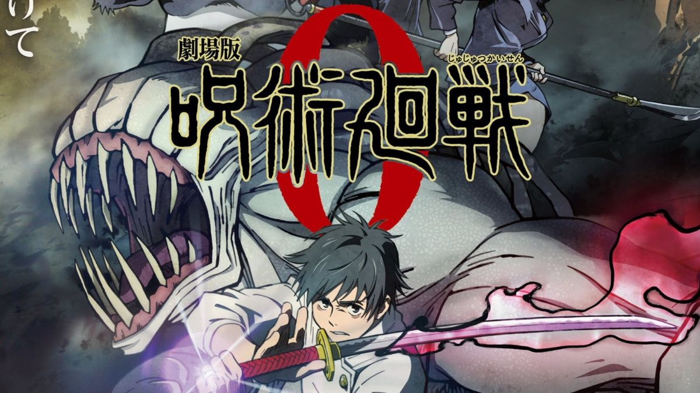

Jujutsu Kaisen 0 is a dark fantasy anime film released in 2021 and produced by MAPPA. It serves as a direct prequel to the Jujutsu Kaisen series, adapted from the manga by Gege Akutami with the same title. The story takes place one year before Yuji Itadori’s journey begins, focusing on a new protagonist, Yuta Okkotsu, a high school student haunted by the powerful cursed spirit of his childhood friend, Rika Orimoto.
The story follows Yuta after he is recruited into Tokyo Jujutsu High by the legendary sorcerer Satoru Gojo. Under his guidance, Yuta trains alongside other students such as Maki Zen'in, Toge Inumaki, and Panda to control Rika’s immense power. The conflict reaches its peak during the "Night Parade of a Hundred Demons", a large-scale attack led by the antagonist Suguru Geto, who aims to take Rika’s power for his own twisted ambitions.
The film achieved both critical and commercial success and is considered an essential (canon) part of the Jujutsu Kaisen storyline. It provides important background for several supporting characters and introduces Yuta as a key figure in later events. Therefore, watching this movie is highly recommended before starting Season 2, as it helps viewers understand the deep relationship between Gojo and Geto, as well as Yuta’s future role in the series.